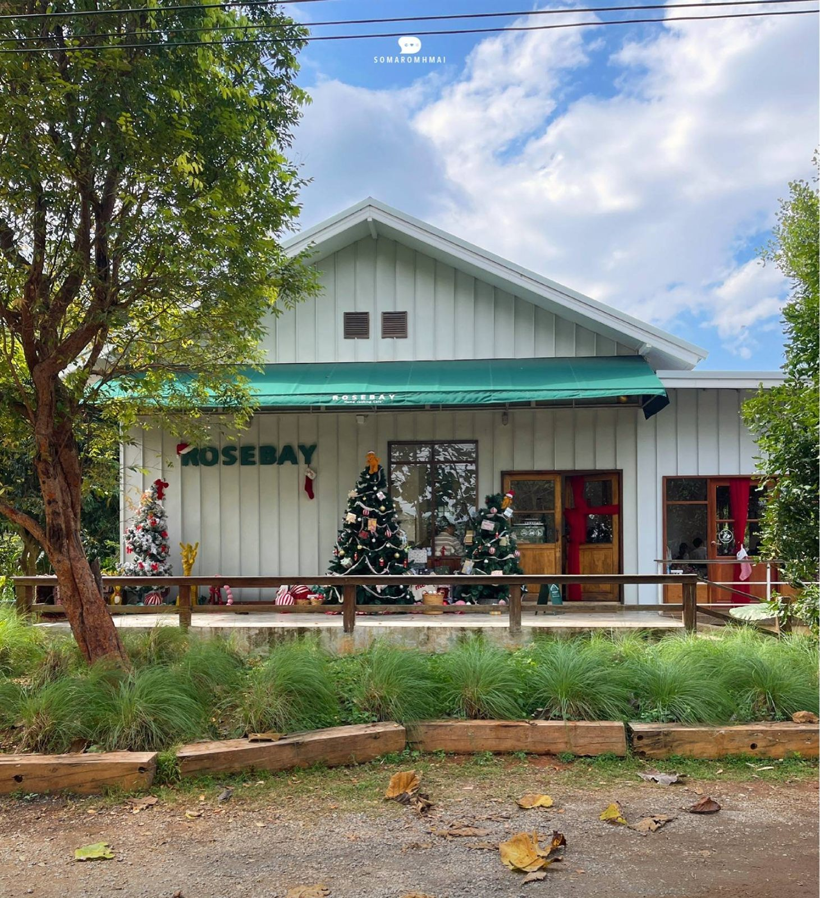
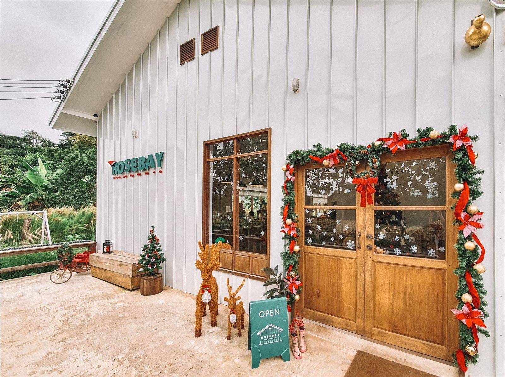
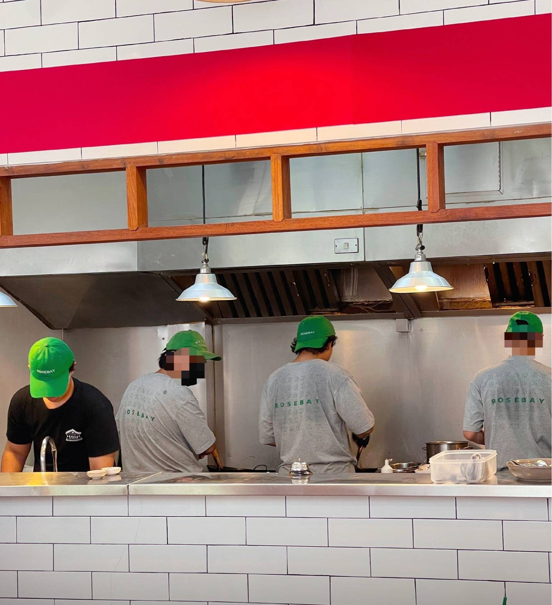
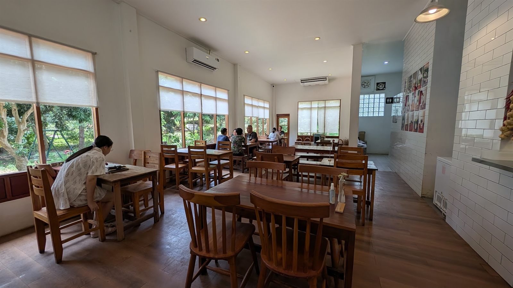

A little white house in Khao Yai.
White board-and-batten walls, a teal awning, timber doors, and an open kitchen right in the middle of the room.

Two homes in one word.
The name comes from two places at once: the owner's former family name, which means rose, and the bay in Australia that was the starting point where she went to learn about cooking.
What came back to Khao Yai was not a restaurant concept. It was the single-plate cooking people actually eat at home.
We do not tell more of the story than we can source. The rest of it is hers.
There are vegetable beds out front.
Raised timber beds of herbs and vegetables sit right in front of the porch. The kitchen picks from them.
There are butterflies, too. A guest wrote about them. We cannot promise those.




Nothing is hidden at the back.
The kitchen is in the middle of the room — a white tiled counter, pendant lights, and cooks standing at it. You watch every plate from the pan to the table.
“เข้ามาในร้านเป็นครัวเปิด ครัวจริงจังมาก” — a guest review on Wongnai





White walls, dark timber, garden light.
There is an air-conditioned room and an outdoor zone, seating in the region of forty to fifty.